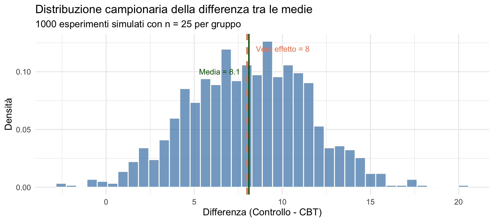
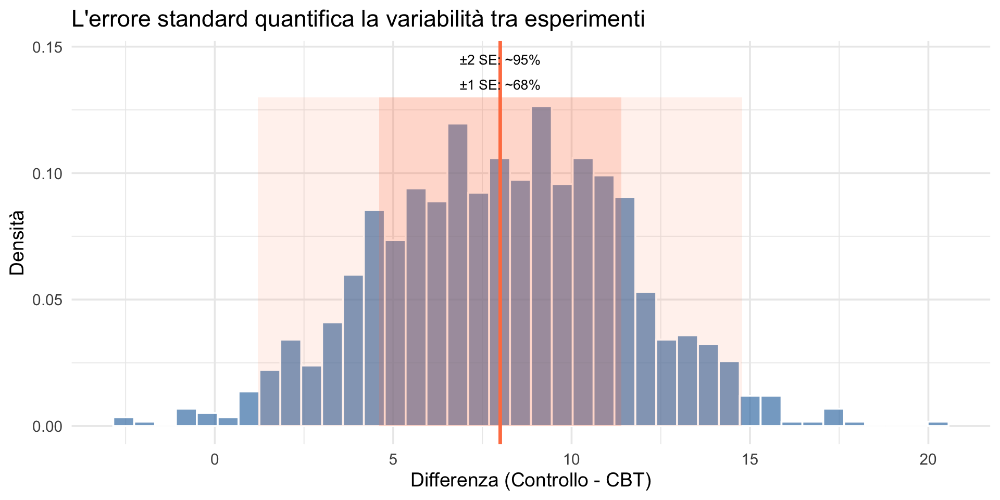
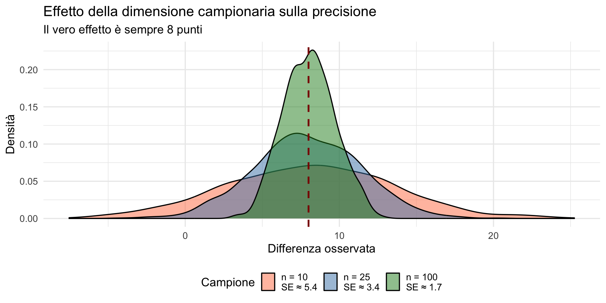

![]()
# -----------------------------
# 1. Parametri della popolazione
# (nella realtà sono sconosciuti)
# -----------------------------
media_controllo <- 55 # media BDI gruppo controllo
media_cbt <- 47 # media BDI gruppo CBT
dev_standard <- 12 # variabilità individuale
# -----------------------------
# 2. Parametri dello studio
# -----------------------------
n_per_gruppo <- 25 # pazienti per gruppo
n_studi <- 1000 # quante volte ripetiamo lo studioLa domanda del ricercatore
e la risposta frequentista — Segmento 1
29 ottobre 2026
Perché studiare il frequentismo
Una crisi nella scienza
Nel 2015 il progetto Reproducibility Project: Psychology ha tentato di replicare 100 studi pubblicati sulle migliori riviste di psicologia. Risultato: solo circa un terzo delle repliche ha prodotto effetti statisticamente significativi.
Questo ha innescato quella che oggi chiamiamo crisi della riproducibilità — e ha messo sotto esame gli strumenti statistici che la psicologia usa da quasi un secolo.
Lo strumento al centro di questa crisi è l’inferenza frequentista: il test di ipotesi, il valore-\(p\) e l’intervallo di confidenza.
Perché ne parliamo in un corso più moderno?
Per due ragioni.
La prima è pratica: la grande maggioranza della letteratura psicologica esistente usa metodi frequentisti. Se non capite cosa significano (e cosa non significano) i risultati che leggete, non potete valutare criticamente le evidenze.
La seconda è concettuale: capire i limiti dell’approccio frequentista è il modo più efficace per apprezzare perché l’inferenza bayesiana risponde in modo diverso — e spesso più diretto — alle domande che i ricercatori si pongono davvero.
Obiettivi
- Identificare il gap tra ciò che vorremmo sapere e ciò che il frequentismo permette di dire.
- Comprendere l’inversione logica dell’inferenza frequentista.
- Visualizzare il concetto di distribuzione campionaria.
- Costruire intuizioni prima delle formule.
Parte 1: la domanda naturale
Uno scenario concreto
Hai condotto uno studio: 30 studenti universitari con ansia moderata hanno seguito 8 settimane di training mindfulness.
I punteggi di ansia (STAI) sono diminuiti in media di 12 punti.
La domanda che ti viene naturale:
“Qual è la probabilità che la mindfulness funzioni davvero?”
Un solo campione non è il fenomeno
- Abbiamo osservato un risultato: –12 punti di ansia → ma questo risultato viene da uno specifico campione di 30 studenti.
Se ripetessimo lo studio:
- con altri 30 studenti
- nello stesso modo → otterremmo quasi certamente un risultato diverso.
Ogni campione è una possibile realizzazione del fenomeno:
- in alcuni l’effetto osservato sarà più grande,
- in altri più piccolo,
- in qualcuno, magari, del tutto assente.
Ma noi abbiamo un solo campione.
La domanda cruciale è:
Cosa possiamo imparare sul fenomeno nella sua interezza a partire da questo singolo insieme di dati?
Questo è il problema centrale dell’inferenza statistica.
La risposta — e il modo di costruirla — cambia radicalmente a seconda dell’approccio che si sceglie.
Domande che i ricercatori vorrebbero porre
«Quanto è probabile che questo trattamento sia efficace, dati i risultati del mio studio?»
«Qual è la probabilità che la differenza osservata rifletta un effetto reale?»
«Posso concludere che l’intervento funziona?»
«Quanta fiducia posso avere che il vero effetto sia almeno di 5 punti?»
Domande che i ricercatori vorrebbero porre
Il paradosso frequentista
Nessuna di queste domande può ricevere una risposta diretta nel framework frequentista.
Cosa vorremmo sapere
La domanda più naturale e diretta è:
Qual è la probabilità che la mia ipotesi sia vera, alla luce dei dati che ho raccolto?
In simboli:
\[ P(\text{ipotesi} \mid \text{dati}) \]
«Qual è la probabilità che la mindfulness funzioni, dato che ho osservato una riduzione di 12 punti?»
È semplice, è intuitivo, è ciò che ogni ricercatore vorrebbe poter rispondere.
Cosa invece il frequentismo ci chiede di fare
Nel framework frequentista la domanda è un’altra.
Non partiamo dall’ipotesi per valutarne la credibilità.
Cosa invece il frequentismo ci chiede di fare
Partiamo dall’ipotesi nulla e chiediamo:
Se questa ipotesi fosse vera, quanto sarebbero improbabili i miei dati?
In simboli:
\[ P(\text{dati} \mid \text{H}_0) \]
«Se la mindfulness non avesse alcun effetto, che probabilità avrei di osservare una riduzione di 12 punti o più?»
Le due ipotesi a confronto
| Ipotesi | Cosa afferma | Ruolo nel test |
|---|---|---|
| \(H_1\) · Alternativa | «C’è un effetto» (la mindfulness riduce l’ansia) |
È ciò che vorremmo dimostrare |
| \(H_0\) · Nulla | «Non c’è effetto» (la riduzione media è zero) |
È ciò che assumiamo per calcolare il test |
Attenzione al rovesciamento logico
Il frequentismo non assegna probabilità alle ipotesi.
Parte dall’ipotesi nulla e chiede: «I dati sono sorprendenti sotto \(H_0\)?»
Se lo sono, rifiutiamo \(H_0\) — ma senza mai quantificare la probabilità che \(H_1\) sia vera.
L’inversione concettuale
| Ciò che vorremmo | Ciò che calcoliamo | |
|---|---|---|
| Formula | \[P(\text{ipotesi} \mid \text{dati})\] | \[P(\text{dati} \mid \text{H}_0)\] |
| Traduzione | Probabilità dell’ipotesi alla luce dei dati |
Probabilità dei dati sotto l’ipotesi nulla |
| Domanda | «Qual è la probabilità che la mindfulness funzioni?» |
«Se non funzionasse, quanto sarebbero sorprendenti i dati?» |
Il paradosso frequentista
Le due quantità non sono la stessa cosa.
Possono persino assumere valori opposti — un risultato «altamente significativo» (valore-\(p\) molto piccolo) non implica che \(H_1\) sia probabile.
Questo è il prezzo da pagare per un approccio che non assegna probabilità alle ipotesi.
Perché l’inversione è un problema serio
Il teorema di Bayes ci avverte
\[ P(H \mid D) = P(D \mid H)\frac{P(H)}{P(D)}. \]
Le due probabilità coincidono solo se \(\frac{P(H)}{P(D)} = 1\) — cioè solo in casi molto particolari.
Nella realtà, le due probabilità sono quasi sempre diverse, e talvolta enormemente diverse.
Un esempio clinico
| \(P(\text{febbre} \mid \text{morbillo})\) | ≈ 1.00 |
| (quasi tutti i malati di morbillo hanno febbre) | |
| \(P(\text{morbillo} \mid \text{febbre})\) | ≈ 0.001 |
| (pochissimi febbricitanti hanno il morbillo) |
Scambiarle è un errore diagnostico grave
Non si può dire: «Ha la febbre, quindi è probabile che abbia il morbillo.»
Eppure, questo è esattamente il tipo di errore che si commette quando si interpreta il valore-\(p\) come se fosse la probabilità che l’ipotesi nulla sia vera.
La stessa inversione, lo stesso errore
| In medicina | In statistica |
|---|---|
| «Febbre → morbillo» ❌ | «Valore-\(p\) piccolo → \(H_0\) falsa» ❌ |
| Confonde \(P(D \mid H)\) con \(P(H \mid D)\) | Confonde \(P(\text{dati} \mid \text{H}_0)\) con \(P(\text{H}_0 \mid \text{dati})\) |
L’inversione non è un dettaglio tecnico. È un errore logico — con conseguenze reali.
Parte 2: la metafora del tribunale
Il sistema giudiziario anglosassone
Nel processo penale anglosassone:
Non si chiede: “È colpevole?”
Si chiede: “Le prove sono incompatibili con l’innocenza?”
L’imputato è presunto innocente finché le prove non dimostrano il contrario oltre ogni ragionevole dubbio.
L’analogia con l’inferenza frequentista
| Tribunale | Inferenza statistica |
|---|---|
| Imputato | Ipotesi nulla (\(\text{H}_0\)) |
| Innocente fino a prova contraria | \(\text{H}_0\) vera fino a prova contraria |
| “Colpevole oltre ogni ragionevole dubbio” | \(p\) < 0.05 |
| Verdetto: colpevole/non colpevole | Rifiuto/non rifiuto \(\text{H}_0\) |
Nota
Il frequentismo non dice se \(\text{H}_1\) è vera, ma solo se i dati sono incompatibili con \(\text{H}_0\).
I limiti della procedura
Un verdetto di “non colpevole” non significa “innocente”.
Significa solo: le prove non erano sufficienti.
Analogamente, non rifiutare \(\text{H}_0\) non significa che \(\text{H}_0\) sia vera.
Significa solo: i dati non erano sufficientemente incompatibili con \(H_0\).
Nella ricerca psicologica, un risultato “non significativo” viene troppo spesso interpretato come “l’effetto non esiste” — ma l’assenza di evidenza non è evidenza di assenza.
Parte 3: un esempio dettagliato
CBT per la depressione
Studio: 50 pazienti con depressione maggiore
- 25 ricevono CBT (Terapia Cognitivo-Comportamentale),
- 25 sono in lista d’attesa (controllo).
Risultato: dopo 12 settimane, il gruppo CBT mostra una riduzione media del BDI di 8 punti rispetto al gruppo di controllo.
La domanda del ricercatore
“Qual è la probabilità che la CBT sia realmente efficace per la depressione?”
Formalmente, questa è una domanda su:
\[ P(\text{CBT efficace} \mid \text{dati osservati}) \]
cioè: quanto è plausibile l’ipotesi che la CBT funzioni, alla luce dei dati?
La risposta frequentista
Il test statistico frequentista risponde invece così:
“Se la CBT non avesse alcun effetto (\(\text{H}_0\): differenza = 0), la probabilità di osservare una differenza di almeno 8 punti per puro caso è \(p\) = 0.02.”
Formalmente:
\[ P(\text{dati così estremi} \mid \text{H}_0). \]
Avviso
Questa risposta non fornisce direttamente la probabilità che la CBT funzioni.
Cosa possiamo e cosa non possiamo concludere
Possiamo dire
- I dati sono incompatibili con l’ipotesi di nessun effetto
- Se \(\text{H}_0\) fosse vera, questi dati sarebbero rari
Non possiamo dire
- “C’è il 98% di probabilità che la CBT funzioni”
- “La probabilità che \(\text{H}_0\) sia vera è 2%”
Il test frequentista non stima la probabilità delle ipotesi. Valuta soltanto quanto i dati siano incompatibili con l’ipotesi nulla, nient’altro.
Un’analogia per capire meglio
Immagina questa situazione della vita quotidiana.
Un tuo amico, che ti conosce molto bene e di cui ti fidi, ha appena visto un film al cinema.
Tu gli chiedi:
“Secondo te, questo film mi piacerebbe?”
Una risposta strana
Il tuo amico, invece di rispondere direttamente, ti dice:
“Se in realtà il film non fosse adatto a te, sarebbe molto strano che mi avesse colpito così tanto pensando ai tuoi gusti. Diciamo che ci sarebbe solo il 3% di probabilità.”
Tu rimani perplesso.
Cosa capisci davvero da questa risposta?
Fermati un momento e chiediti:
- Sai se il film ti piacerà?
- Sai quanto ti piacerà?
- Sai se vale la pena andare a vederlo?
No.
Sai solo una cosa molto specifica:
Se il film non fosse adatto a te, sarebbe sorprendente che il tuo amico abbia avuto quell’impressione.
Perché questa risposta non è quella che volevi
La risposta del tuo amico ha questa struttura:
\[ P(\text{impressione dell'amico} \mid \text{film non adatto a te}). \]
Ma la domanda che avevi in mente era:
\[ P(\text{film adatto a te} \mid \text{impressione dell'amico}). \]
Importante
Dire “sarebbe strano che mi avesse colpito così, se il film non fosse adatto a te”
non è la stessa cosa di dire “il film ti piacerà”.
Il passaggio sembra naturale, quasi ovvio. Ma non è logicamente garantito senza informazioni aggiuntive — per esempio: quanto spesso i film piacciono a entrambi? Quanto è affidabile il giudizio dell’amico sui tuoi gusti?
Il parallelo con la statistica
| Esempio del film | Statistica frequentista |
|---|---|
| “Il film non è adatto a te” | Ipotesi nulla (\(\text{H}_0\)) |
| “Il film è adatto a te” | Ipotesi alternativa (\(\text{H}_1\)) |
| “Sarebbe strano che mi avesse colpito così” | valore-\(p\) piccolo |
| “Il film ti piacerà quasi sicuramente” | Conclusione non consentita |
Torniamo all’esempio CBT
Dire:
“Se la CBT non funzionasse, osservare una differenza di 8 punti sarebbe raro (\(p\) = 0.02).”
è logicamente equivalente a dire:
“Se il film non fosse adatto a te, sarebbe strano che il mio amico ne fosse rimasto così colpito.”
In entrambi i casi:
- la risposta non coincide con ciò che vorremmo sapere;
- il test frequentista ci dice quanto i dati mettono in difficoltà \(\text{H}_0\);
- ma non ci dice quanto sia probabile che il trattamento funzioni (o che il film ci piacerebbe).
Nota
Per rispondere alla domanda che ci interessa davvero — “Qual è la probabilità che la CBT funzioni?” — serve un approccio diverso: quello bayesiano, che arriverà nelle prossime lezioni.
Parte 4: la distribuzione campionaria
Il concetto fondamentale
L’inferenza frequentista si basa su un esperimento mentale:
immagina di ripetere lo stesso studio infinite volte.
Ogni volta otterrai risultati leggermente diversi, perché il campione cambia.
L’esperimento che non faremo mai
Immagina di ripetere lo studio sulla CBT infinite volte:
- recluti 50 nuovi pazienti con depressione;
- li assegni casualmente a CBT o controllo;
- misuri la differenza media nel BDI;
- ripeti… all’infinito.
Ogni replica dà una media leggermente diversa.
Questa variabilità è la distribuzione campionaria.
Idea concettuale
Immaginiamo di poter ripetere lo stesso studio molte volte, ogni volta con nuovi pazienti estratti dalla stessa popolazione. La distribuzione campionaria è l’insieme dei risultati di questi studi ripetuti.
Simuliamo in R
Ripetiamo lo studio molte volte
# Creiamo un contenitore vuoto
# Qui salveremo il risultato di ogni studio
differenze_medie <- numeric(n_studi)
# Ripetiamo lo studio 1000 volte
for (i in 1:n_studi) {
# 1) Estraiamo un campione dal gruppo di controllo
gruppo_controllo <- rnorm(
n = n_per_gruppo,
mean = media_controllo,
sd = dev_standard
)
# 2) Estraiamo un campione dal gruppo CBT
gruppo_cbt <- rnorm(
n = n_per_gruppo,
mean = media_cbt,
sd = dev_standard
)
# 3) Calcoliamo la media in ciascun gruppo
media_controllo_studio <- mean(gruppo_controllo)
media_cbt_studio <- mean(gruppo_cbt)
# 4) Calcoliamo la differenza tra le due medie
differenza <- media_controllo_studio - media_cbt_studio
# 5) Salviamo il risultato di QUESTO studio
differenze_medie[i] <- differenza
}Esaminiamo i primi risultati:
[1] 13.356991 9.008991 8.240202 8.545538 4.501387 5.132638 9.427682
[8] 4.175022 4.083584 10.521498 11.505802 5.236283 11.683297 14.373231
[15] 9.371927 8.716709 10.802864 4.498430 11.458585 9.217455 11.938693
[22] 11.000685 9.774367 10.067411 7.520519 2.245143 11.180687 6.945722
[29] 6.377693 4.395215 12.700649 10.635975 6.652363 5.798119 14.575313
[36] 8.575845 7.952114 9.911081 11.712205 15.260523 5.836300 11.143587
[43] 5.128765 13.561073 9.901122 6.533288 6.528631 11.368757 7.766771
[50] 7.727331Come interpretare questo oggetto
differenze_mediecontiene 1000 numeri.
Ogni numero rappresenta:
- un singolo studio ipotetico,
- con 25 pazienti per gruppo,
- estratti dalla stessa popolazione,
- con la stessa vera efficacia (8 punti).
La distribuzione di questi 1000 valori è la distribuzione campionaria della differenza tra le medie.
Visualizziamo la distribuzione campionaria

Cosa osserviamo?
Media delle differenze: 8.1 Deviazione standard (errore standard): 3.42 La distribuzione campionaria è:
- centrata sul vero effetto (circa 8 punti);
- dispersa attorno a questo valore (SE circa 3.4 punti).
Cosa ci dice la dispersione?
Un errore standard di 3.4 punti significa che, anche se il vero effetto è 8, in singoli studi con \(n = 25\) per gruppo potreste osservare differenze che vanno da circa 1 a circa 15 punti — e qualche volta anche valori vicini a zero o negativi.
Questo è il motivo per cui due studi sullo stesso trattamento possono produrre risultati apparentemente contraddittori: non perché uno dei due abbia sbagliato qualcosa, ma perché la variabilità campionaria è grande rispetto alla dimensione dell’effetto.
Tenete a mente questo concetto: sarà cruciale per capire la crisi di riproducibilità.
Parte 5: l’errore standard
Definizione
L’errore standard (SE) è la deviazione standard della distribuzione campionaria.
Misura quanto varierebbe la nostra statistica se ripetessimo l’esperimento.
La formula
Per la differenza tra due medie:
\[ SE = \sigma \sqrt{\frac{1}{n_1} + \frac{1}{n_2}} = \sigma \sqrt{\frac{2}{n}}. \]
Nel nostro esempio:
\[ SE = 12 \times \sqrt{\frac{2}{25}} = 12 \times 0.283 \approx 3.4. \]
La formula: da dove viene?
Il principio fondamentale è:
la varianza di una somma (o differenza) di variabili casuali indipendenti è uguale alla somma delle loro varianze.
\[ \text{Var}(X - Y) = \text{Var}(X) + \text{Var}(Y). \]
Questo principio lo abbiamo visto nella lezione sulla covarianza: quando due variabili sono indipendenti, \(\text{Cov}(X, Y) = 0\), e la varianza della differenza si semplifica alla somma delle varianze.
Passo 1: varianza di una singola media
Per una singola media campionaria \(\bar{X}\), sappiamo che: \[ \text{Var}(\bar{X}) = \frac{\sigma^2}{n}, \] dove \(\sigma^2\) è la varianza nella popolazione e \(n\) la dimensione campionaria.
Passo 2: varianza della differenza tra due medie
Siano \(\bar{X}_1\) e \(\bar{X}_2\) le medie di due campioni indipendenti. La differenza è: \[ D = \bar{X}_1 - \bar{X}_2. \] Per l’indipendenza: \[ \text{Var}(D) = \text{Var}(\bar{X}_1) + \text{Var}(\bar{X}_2) = \frac{\sigma^2}{n_1} + \frac{\sigma^2}{n_2}. \]
Passo 3: errore standard (deviazione standard di D)
L’errore standard è la radice quadrata della varianza: \[ SE = \sqrt{\frac{\sigma^2}{n_1} + \frac{\sigma^2}{n_2}} = \sigma \sqrt{\frac{1}{n_1} + \frac{1}{n_2}}. \]
Passo 4: caso particolare (stesso n per entrambi i gruppi)
Se \(n_1 = n_2 = n\), la formula si semplifica: \[ SE = \sigma \sqrt{\frac{1}{n} + \frac{1}{n}} = \sigma \sqrt{\frac{2}{n}}. \]
Applicazione al nostro esempio
\[ SE = 12 \times \sqrt{\frac{2}{25}} = 12 \times 0.283 \approx 3.4. \]
Questo significa che, se ripetessimo lo studio infinite volte, la deviazione standard delle differenze osservate sarebbe circa 3.4 punti.
Verifichiamo con la simulazione
SE teorico: 3.39 SE dalla simulazione: 3.42 La teoria e la simulazione concordano.
Cosa ci dice l’errore standard?

Più grande il campione, più piccolo l’errore standard

Cosa significa per la ricerca psicologica
In psicologia clinica, i campioni tipici hanno 20-30 partecipanti per gruppo. Con queste numerosità, l’errore standard è grande rispetto agli effetti che si cercano.
Conseguenza: anche se un trattamento funziona davvero, la variabilità campionaria è tale che in molti studi il risultato non raggiungerà la significatività statistica — non perché il trattamento non funzioni, ma perché il campione è troppo piccolo per distinguere il segnale dal rumore.
Cosa significa per la ricerca psicologica
Questo è uno degli ingredienti della crisi di riproducibilità: studi underpowered (con potenza statistica insufficiente) producono risultati instabili — a volte “significativi”, a volte no — anche quando l’effetto è reale e costante.
Parte 6: il paradosso fondamentale
L’inferenza frequentista si basa su esperimenti che non faremo mai
L’errore standard, gli intervalli di confidenza, i valori-\(p\)…
…sono tutti calcolati basandosi su cosa accadrebbe se ripetessimo lo studio infinite volte.
Ma abbiamo solo questo unico campione e non lo ripeteremo mai.
Le conseguenze
Le conclusioni dipendono da esperimenti ipotetici, non solo dai dati osservati.
Il “livello di significatività” si riferisce a errori nel lungo periodo, non a questo studio.
L’intervallo di confidenza al 95% non significa che c’è il 95% di probabilità che il parametro sia lì.
Importante
Questa logica controfattuale è la fonte di molti fraintendimenti.
Il paradosso nella pratica quotidiana
Pensate allo scenario clinico: un paziente vi chiede “Quanto è probabile che questo trattamento funzioni per me?”.
La risposta frequentista è: “Se ripetessimo lo studio infinite volte con pazienti come lei, nel 95% dei casi l’intervallo di confidenza conterrebbe il vero effetto.”
Il paziente vuole sapere qualcosa su questo trattamento e su se stesso.
Il frequentismo offre una garanzia su una procedura che verrà ripetuta infinite volte — una procedura che in realtà non verrà mai ripetuta.
Il paradosso nella pratica quotidiana
Questa discrepanza tra ciò che la procedura garantisce e ciò che la domanda richiede non è un difetto tecnico:
è una caratteristica strutturale dell’approccio frequentista.
L’approccio bayesiano, che vedremo tra poche lezioni, è stato sviluppato in parte proprio per rispondere direttamente a domande come quella del paziente.
Un’anticipazione: cosa vedremo nelle prossime lezioni
Nella seconda parte di questa lezione:
- l’intervallo di confidenza: cosa significa (e cosa non significa);
- simulazioni per “vedere” il comportamento degli IC.
Nella prossima lezione:
- il valore-\(p\) e i test di ipotesi;
- gli errori di tipo I e II… ma anche di tipo S e M.
Riepilogo
Il frequentismo risponde a una domanda diversa da quella che vorremmo porre.
Calcola \(P(\text{dati} \mid H_0)\), non \(P(H \mid \text{dati})\).
L’errore standard misura la variabilità tra esperimenti ipotetici.
La distribuzione campionaria è il concetto chiave — anche se descrive esperimenti che non faremo mai.
Campioni piccoli e variabilità campionaria sono ingredienti centrali della crisi di riproducibilità.
Nella seconda parte:
- esploreremo la distribuzione campionaria con più simulazioni R;
- vedremo come il campione “parla” del parametro… indirettamente;
- introdurremo l’intervallo di confidenza — e cosa non significa.